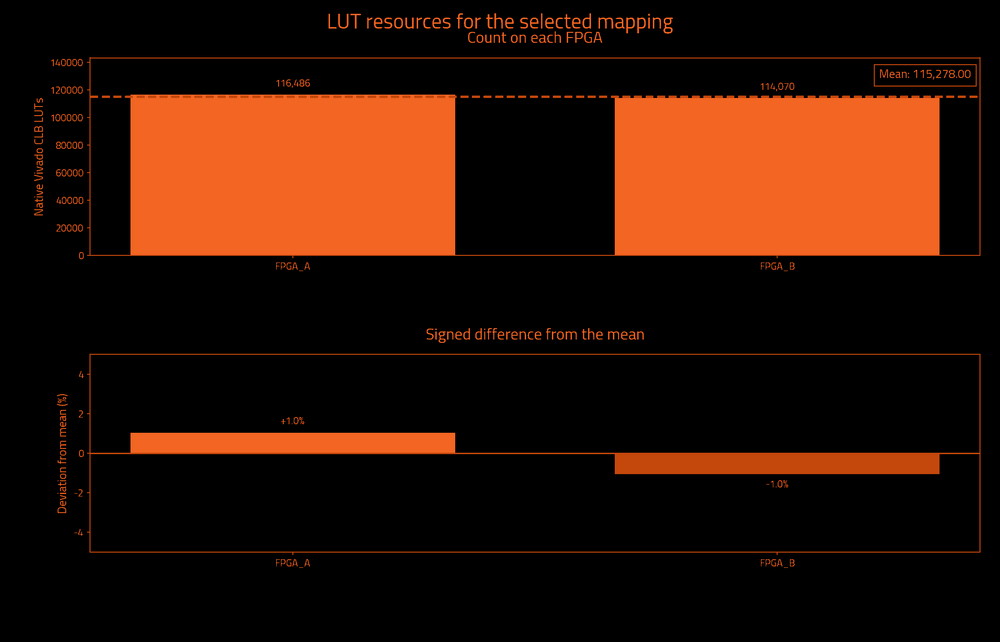
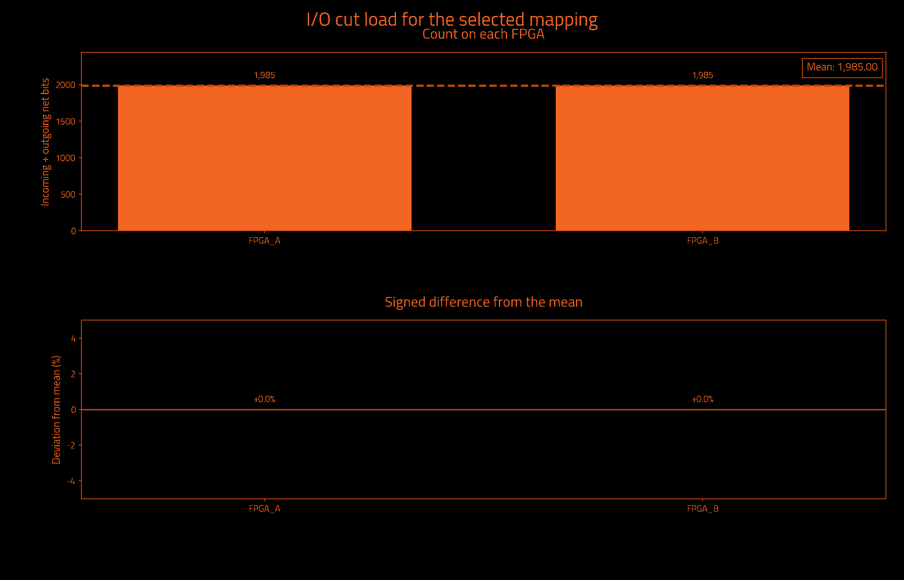
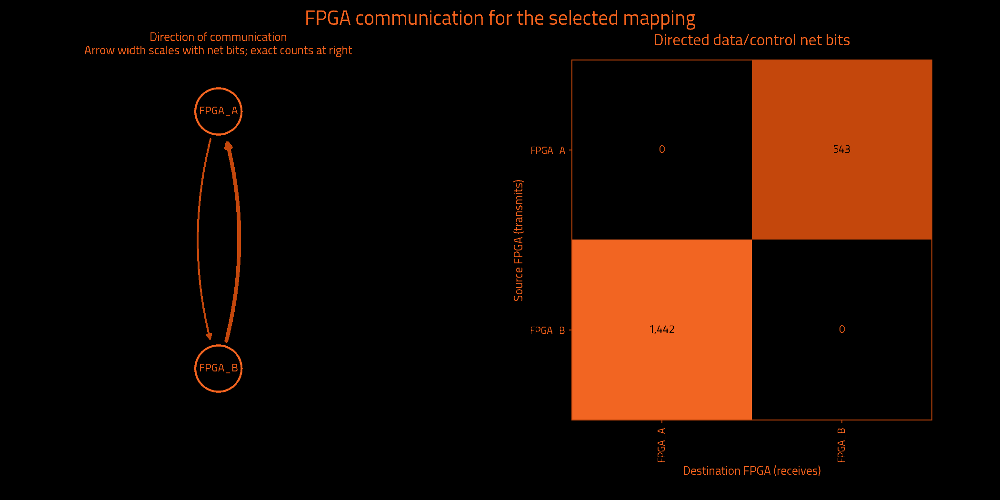

Historical measurements preserved by exact ownership equivalence · mapping.txt
Historical metrics preserved by exact ownership equivalence; not a fresh Vivado measurement.
| Selected partition | Result | Search | Result |
|---|---|---|---|
| FPGAs | 2 | Iterations requested | Unavailable |
| Native Vivado CLB LUTs | 230,556 | Iterations attempted | 3 |
| Unique data/control cut net bits | 1,985 | Selected iteration (zero-based) | 1 |
| Directed data/control net-bit pairs | 1,985 | Target board | j4.phd |
| Measurement | Result | Measurement | Result |
|---|---|---|---|
| Wall time | Unavailable | Observed CPU time | Unavailable |
| Average CPU cores | Unavailable | Average CPU use (one core = 100%) | Unavailable |
| Peak sampled process-tree memory | Unavailable | Frontend peak memory | Unavailable |
| Child processes observed | Unavailable | Sampling interval | Unavailable |
Measured through: Unavailable. CPU covers the frontend and observed descendants; sampling can miss short-lived work. Process-tree memory sums may count shared pages more than once.
No runtime measurement supplied.
Observed CPU time is a lower bound when short-lived processes escape sampling. Windows-host sampling excludes work inside WSL. Process-tree memory sums may count shared pages more than once.
| Logical FPGA | Native Vivado CLB LUTs | Device LUT utilization | Hard LUT cap | Outgoing net bits | Incoming net bits | Total I/O net bits |
|---|---|---|---|---|---|---|
| FPGA_A | 116,486 | 1.377% | 6,345,216 | 543 | 1,442 | 1,985 |
| FPGA_B | 114,070 | 1.348% | 6,345,216 | 1,442 | 543 | 1,985 |
| Logical FPGA | Target device | Registers | Block RAM tiles | DSP blocks | UltraRAM blocks |
|---|---|---|---|---|---|
| FPGA_A | xcvp1902 | 65,898 | 9.5 | 16 | 0 |
| FPGA_B | xcvp1902 | 80,903 | 333.5 | 8 | 12 |



| Measurement | Before local cleanup | Selected result |
|---|---|---|
| Worst minimum physical link hops without a register | 4 | 3 |
| Worst FPGA boundary crossings without a register | 4 | 3 |
| Extra crossings summed over modeled endpoints | 18,173 | 7,950 |
| Combinational primitives on transit paths | 1,125 | 1,119 |
| Directed hypergraph transfers | 1,732 | 1,869 |
| Sampled source timing paths scored | Unavailable | 1,000 |
| Weighted cost on sampled source timing paths | 0.0 | 0.0 |
| Signal category | Unique crossing net bits | Directed net-bit pairs |
|---|---|---|
| Data and functional synchronous control | 1,985 | 1,985 |
| Clock only | 1 | 1 |
| Reset only | 3 | 3 |
| Iteration | Result | Worst register-free crossings | Extra endpoint crossings | Transit primitives | Hypergraph transfers | Utilization imbalance |
|---|---|---|---|---|---|---|
| 0 | Not selected | 4 | 16,855 | 3,774 | 1,949 | 0.90% |
| 1 | Selected best accepted mapping | 3 | 7,950 | 1,119 | 1,869 | 1.05% |
| 2 | Rejected: Command failed (1); C:\Users\Wrelks\Desktop\upgrade_partitioner_handle_large_designs\work\final_j4_matrix_controller_v3\evidence\OT_k2\installed_serial_default_20261014_fc6b5b58\candidate_02\partition.log + Initialize LP Refiner = 2.19e-05 s + Label Propagation = 0.0157276 s + Initialize FM Refiner = 1.44e-05 s + FM = 0.0469577 s + Initialize Data for Unc. FM = 0.0021776 s + Collect Border Nodes =… | Unavailable | Unavailable | Unavailable | Unavailable | Unavailable |
| Measurement | Meaning |
|---|---|
| Worst minimum physical link hops without a register | Lower bound from the declared topology, not a routed transport path. |
| Worst FPGA boundary crossings without a register | Largest ownership-change count on a modeled combinational path. |
| Extra crossings summed over modeled endpoints | Crossings beyond the first, summed over endpoints; not a distinct-net count. |
| Combinational primitives on transit paths | Logic that receives and forwards a remote signal without register capture. |
| Directed hypergraph transfers | Destination partitions beyond the first, summed over modeled hyperedges. |
| Sampled source timing paths scored | Exported Vivado timing samples, not all-path timing closure. |
| Weighted cost on sampled source timing paths | Relative ranking cost, not measured transport delay or DUT frequency. |
I/O cut load counts one outgoing multicast net once at its source and once at each receiving FPGA. Clock-only and reset-only nets are separate. Counts describe logical payload, not physical package pins or a pinmux ratio. External top-level ports have no invented FPGA home. Hypergraph transfers differ from the full net-bit census.
Deviation is 100 × (FPGA count / mean − 1); all-zero designs have 0% deviation. Device utilization and hard LUT caps are separate. Before local cleanup means this selected candidate before refinement, not necessarily the first iteration. More iterations can improve a result; the best accepted candidate is retained.
Timing sample coverage: exported sampled native setup paths only; not all-path STA. Path model: primitive conservative data arcs; top IO has no FPGA home. These are source-model measurements, not achieved hardware timing.
| Logical FPGA | Physical location | Selected direct neighbors |
|---|---|---|
| FPGA_A | C01/S01/E | 1 |
| FPGA_B | C01/S01/F | 1 |
| FPGA | Neighbor | Declared lanes | Wires at topology minimum compression |
|---|---|---|---|
| FPGA_A | FPGA_B | 16 | 1,024 |
The communication matrix shows signal demand. Declared links guide optimization; transport routing and physical bandwidth allocation happen later.
Resources describe original synthesized logic; future wrapper and transport resources are excluded. Mapping format, ownership and hard capacity checks are acceptance gates. Downstream regroup and hardware validation are separate.
{
"status": "HISTORICAL_METRICS_PRESERVED_BY_EXACT_OWNERSHIP_EQUIVALENCE",
"backend_version": "1.6.2",
"partition_preset_requested": "default",
"frontend_sha256": "d4dd69ef7849e0e5770e1ea0173f2106b1f1ec13ccc9303f7e8eaf9f3bc7237c",
"native_timeout_seconds": 7200.0,
"native_timeout_scope": "persistent checkpoint startup and each resource request; batch commands unaffected",
"topology_sha256": "81cbe6e83afb0c4b396c376a11ce80bc5e221d12b6c8992712e00efac17c3704",
"topology_source_sha256": "6f393e7eee76cbf20cd96e46f52c8c0a34be2365c7222aa6cf7abfe87c7e1b83",
"fpga_count": 2,
"native_backend_invoked": true,
"preferred_native_balance": 0.2,
"selection_policy_version": 3,
"native_balance_absolute_tolerance": 1e-12,
"effective_solver_epsilon": 0.3,
"effective_refiner_scalar_balance": 0.3,
"native_balance_search_envelope": 0.3,
"target_capacity_dependency_manifest_sha256": "18a3ac71857350176b8d15449e6cf21f106a9c902bd439a5a7d9d722c218d2c3",
"target_capacity_dependencies_sha256": {
"C:\\Users\\Wrelks\\Desktop\\upgrade_partitioner_handle_large_designs\\RapidWright\\scripts\\partition\\target_capacity.py": "652db231c4c19cfb2aa7bea140c1184d6f51162be857358b94152b3a2661f992",
"C:\\Users\\Wrelks\\Desktop\\upgrade_partitioner_handle_large_designs\\topologies\\j4_board_topology.json": "6f393e7eee76cbf20cd96e46f52c8c0a34be2365c7222aa6cf7abfe87c7e1b83",
"C:\\Users\\Wrelks\\Desktop\\upgrade_partitioner_handle_large_designs\\topologies\\j4_board_topology.json.targets.json": "25db82ebe61166d1d1998042eaa07ad9c843238119e5dd6e16e70695249afcd4",
"C:\\Users\\Wrelks\\Desktop\\upgrade_partitioner_handle_large_designs\\RapidWright\\scripts\\partition\\part_catalog\\vivado_2025_1_parts.tsv": "a402de944fbd660743f6a7ff12403060e886627439826186600da78618e6a1fe",
"C:\\Users\\Wrelks\\Desktop\\upgrade_partitioner_handle_large_designs\\RapidWright\\scripts\\partition\\part_catalog\\vivado_2025_1_parts.tsv.identity.json": "c5937f61bb02a289745eee9e8cc359b56692ed908e206cf549830da035957707"
},
"effective_logical_balance": 0.5,
"logical_balance_policy": "automatic_uniform_or_unspecified_native_caps",
"logical_balance_requested": null,
"logical_resource_capacities_explicit": false,
"engine_manifest_sha256": "b64272b8c469cffdf98ea76b1afcae5799a0fa0bc63d855ece820af18d841f8a",
"source_pair_association": {
"version": 1,
"mode": "supplied_manifest_legacy",
"original_receipt": "C:\\Users\\Wrelks\\Desktop\\upgrade_partitioner_handle_large_designs\\LSUT_2\\work\\partition_experiment\\opentitan_reference\\export_receipt.json",
"receipt_snapshot": "C:\\Users\\Wrelks\\Desktop\\upgrade_partitioner_handle_large_designs\\work\\final_j4_matrix_controller_v3\\evidence\\OT_k2\\installed_serial_default_20261014_fc6b5b58\\inputs\\source_pair_receipt.json",
"original_receipt_sha256": "dcbd895cbef9f2a72ca4e66cdb97530e69c5af3d9716b1912afd87470de129c8",
"receipt_snapshot_sha256": "dcbd895cbef9f2a72ca4e66cdb97530e69c5af3d9716b1912afd87470de129c8",
"input_edif": "C:\\Users\\Wrelks\\Desktop\\upgrade_partitioner_handle_large_designs\\LSUT_2\\work\\partition_experiment\\opentitan_reference\\post_synth.edf",
"input_edif_sha256": "d11771253feb2a657e761f18ee2442fc8680b8dd8e2a6dfaffaa63cfbbb9904b",
"checkpoint": "C:\\Users\\Wrelks\\Desktop\\upgrade_partitioner_handle_large_designs\\LSUT_2\\work\\opentitan\\vivado_xcu250-figd2104-2-e\\synth.dcp",
"checkpoint_sha256": "bad3c31ed88515a4269c7d378463b3fc31322341856079aba0434ec2bea2658b",
"native_primitives": "C:\\Users\\Wrelks\\Desktop\\upgrade_partitioner_handle_large_designs\\LSUT_2\\work\\partition_experiment\\opentitan_reference\\leaf_primitives.tsv",
"native_primitives_sha256": "a7ffc23cadb60b8f6a002552d388a8b78a25b691a682e5d5eda01370ea0ddd7c",
"producer_evidence_verified": false,
"export_run_association": "Supplied PASS manifest asserts one export association; producer command, actual native exit0 and completion are not verified",
"scope": "Exact payload and receipt-byte consistency; no arbitrary EDIF/checkpoint electrical-equivalence or cryptographic-authenticity proof"
},
"source_pair_provenance_sha256": "6a0ba85d0a8d8f533e3ac334d72fa706728f457d482f674fd4a1ceea466ada85",
"java_heap": "16G",
"expanded_native_leaf_count": 435034,
"timing_guidance": "sampled_source_STA",
"timing_paths_sha256": "cee575d8c746eaa240746cc5fc83c4a7e7be4dc7ca3970a19fc60f802b507797",
"extra_delay_ns_per_crossing": null,
"native_artifact_storage": "verified_lossless_compression",
"native_oracle_mode": "persistent_original_checkpoint",
"native_residency_policy": "Probe after Java; retain only when measured available RAM covers the next heap, 8 GiB overhead and a prior-HGR native solver reserve",
"native_residency_decisions": [
{
"iteration": 0,
"stage": "after_java",
"available_bytes": 110182203392,
"decision": "load_native_probe"
},
{
"iteration": 1,
"stage": "before_java",
"available_bytes": 105004019712,
"prior_hgr_bytes": 6044805,
"native_solver_reserve_bytes": 2340917408,
"decision": "retain"
},
{
"iteration": 2,
"stage": "before_java",
"available_bytes": 105322315776,
"prior_hgr_bytes": 6140986,
"native_solver_reserve_bytes": 2343995200,
"decision": "retain"
}
],
"native_oracle_scripts_sha256": {
"C:\\Users\\Wrelks\\Desktop\\upgrade_partitioner_handle_large_designs\\RapidWright\\tools\\native_resource_session.py": "caa467021ca9a907b233f52d086d2a5858b08111ba950b718273964f36bd0ca5",
"C:\\Users\\Wrelks\\Desktop\\upgrade_partitioner_handle_large_designs\\RapidWright\\tools\\resource_session.tcl": "dc660b593517075ee79bc42487cdeff95b075cc8f1fc1edbd041e05d9ba17d2a",
"C:\\Users\\Wrelks\\Desktop\\upgrade_partitioner_handle_large_designs\\RapidWright\\tools\\report_partition_resources.tcl": "255ddb495ba953f77a19a373481cbfbde7ca2f127c6f595764b2a101a817ef38",
"C:\\Users\\Wrelks\\Desktop\\upgrade_partitioner_handle_large_designs\\RapidWright\\tools\\archive_native_request.py": "1053024a0794942eeb12bcdd77827541220f05d7355089f8113cac90f42eeb6b"
},
"capture_cohort_cleanup": {
"requested": "off",
"effective": "off",
"backend_supported": true,
"reason": "requested_off"
},
"native_feedback_quality_guard": "accepted_mapping_anchor",
"quality_guard_policy": "ranked",
"minimum_link_hop_analysis_available": true,
"selected_iteration": 1,
"native_cap_check": "PASS",
"native_balance_target_met": true,
"preferred_native_balance_target_met": true,
"native_search_envelope_met": true,
"new_policy_complete_within_search_envelope": true,
"source_input": "C:\\Users\\Wrelks\\Desktop\\upgrade_partitioner_handle_large_designs\\LSUT_2\\work\\partition_experiment\\opentitan_reference\\post_synth.edf",
"source_sha256": "d11771253feb2a657e761f18ee2442fc8680b8dd8e2a6dfaffaa63cfbbb9904b",
"checkpoint_sha256": "bad3c31ed88515a4269c7d378463b3fc31322341856079aba0434ec2bea2658b",
"native_inventory_sha256": "a7ffc23cadb60b8f6a002552d388a8b78a25b691a682e5d5eda01370ea0ddd7c",
"hard_native_clb_lut_caps": {
"FPGA_A": 6345216,
"FPGA_B": 6345216
},
"selection_policy": "Hard capacities and one cut/topology budget; complete paths; worst minimum-link hop lower bound, logical register-free crossings, sampled source timing cost, endpoint excess, transit; native search-envelope limitation tier, transfers, topology cost, then fine balance; preferred balance remains soft",
"minimum_link_hop_scope": "Declared selected adjacency shortest-link lower bounds; not actual transport routing, congestion or nanoseconds",
"scope": "Original synthesized netlist subset utilization; no future wrapper/transport resources included",
"accepted_mapping_sha256": "8e73a3d350a4a38d08e922e5da90f7400712ab287cfe06d87ef754cf56b9a7d9",
"historical_metrics_scope": "Original native and source-graph measurements preserved by exact ownership equivalence; not rerun"
}{
"vivado_resources.tsv": "936e89c3463abc519fbae31b2a4903a4e3937a5f486a35b835b887f4c166f301",
"lut_report.txt": "cfa5a616abbcd58e1ae823822f511bd6ff05b8713f79376c2c952e5d8c9e7afa",
"fpga_control_categories.tsv": "a04e530b2edabd36422a689821264b5dbab0ee498483fc6825ef35261d697098",
"hardware_quality.txt": "1bc0c8e0148312908b7a055340af3f3cc85db75882d9c8669d90beddf8a01141",
"run_provenance.json": "ab77643e581248797503656c1834ed2bae020f670113ae57711f8a47180dd295",
"target_capacity.json": "a7f0f2d9c6569fe09a8e90bf3112f01a111a28377deb38bc670cd2a9f9496e3d",
"native_lut_caps.tsv": "deda6c2abc334993350d1edbbe95e6810b410cd7be8f50ae44f402903967b7e0",
"cells.txt": "b7442687a010a0c8664f85b7e2675d705a68c3183af33b6d1006722475fab3ee",
"topology_manifest.json": "98f6cbbf1ec5449da68fcbdbce969f413411ae9bf87188cde3159e8db99a575b"
}{
"status": "HISTORICAL_METRICS_PRESERVED_BY_EXACT_OWNERSHIP_EQUIVALENCE",
"fresh_native_measurement": false,
"historical_mapping_sha256": "e936356c04c73c0d99bd11538e731007aa2ba28da84ccd12c47d49a608cee04a",
"successor_mapping_sha256": "8e73a3d350a4a38d08e922e5da90f7400712ab287cfe06d87ef754cf56b9a7d9",
"functional_leaves_compared": 427171,
"ownership_mismatches": 0,
"top_port_owner_unchanged": true,
"source_edif_sha256": "d11771253feb2a657e761f18ee2442fc8680b8dd8e2a6dfaffaa63cfbbb9904b",
"source_checkpoint_sha256": "bad3c31ed88515a4269c7d378463b3fc31322341856079aba0434ec2bea2658b",
"proof_files_sha256": {
"prior_native_evidence.json": "887c9f17c3ef58fd30c29e15b7832d3b8210fbf7749e77330f0f47e562c7e1e8",
"reencoding_equivalence.json": "68eb0526a74b971e2b0b30a212052e197d638e1ab226fbf42197c51bbeae4973",
"mapping_contract.json": "5c8013bd109274d810547ffa60d10155792190f05ab0d04a054c1957f0d9212b",
"mapping_records.tsv": "35b8e1f3dff0f812f415d904ffcad9b1c74f1938e6e2611db8cde62d86013f4d",
"mapping_ownership.tsv.gz": "173caf2fa57f18fe20dfc52d54f9e86f7b7db18803b0514c4d95363844dacc79"
},
"historical_artifact_sha256": {
"cells.txt": "b7442687a010a0c8664f85b7e2675d705a68c3183af33b6d1006722475fab3ee",
"endpoint_kind_diagnostic.tsv": "e24050b29cb2ef6589da6bb6186c9300a5289e9fb99cef1f38e48b20aabf1222",
"final_assignment.part": "f36d146c919e07a10f8da681e6d3c0100b4fdb6038bab4a40a55a5de3b3d1029",
"fpga_control_categories.tsv": "a04e530b2edabd36422a689821264b5dbab0ee498483fc6825ef35261d697098",
"fpga_devices.tsv": "6090abb82def9040c755b85ed8800c551dc9a923716fce6412c137a1017ec256",
"fpga_io_cuts.txt": "b539e37ea904ee5ee7357ff32b78919f491ce3447ae2b557cb275878d2f6fde6",
"fpga_net_crossings.tsv": "74fce51eeec1aa6d2f5bac3dd00a65b1a04274e6b0f86c3ddd0a1bf17e4db57d",
"hardware_quality.txt": "1bc0c8e0148312908b7a055340af3f3cc85db75882d9c8669d90beddf8a01141",
"identity.json": "514883108d44b51565f7cfeef07e46e9f897234bd2b546f9baa6be623c71fc66",
"io_cuts.txt": "304ab1e654876253baa833b0157490ef72c310514a148b60a778b8cf4e1a92b9",
"logical_lut_report.txt": "d06f77175c2f61a52faad3b82a9361c96de6cc455f29ab9d87941392e0a1c787",
"logical_resources.tsv": "36a3856f957f0c4e3f7c65fa766663e99c7520dc5d8add3c0030439ca383033a",
"lut_report.txt": "cfa5a616abbcd58e1ae823822f511bd6ff05b8713f79376c2c952e5d8c9e7afa",
"mapping.txt": "e936356c04c73c0d99bd11538e731007aa2ba28da84ccd12c47d49a608cee04a",
"metric_definitions.txt": "28c1e87b6c622b819cb9908f3ad9f58277331314f7be645e2b80c10d99238ba8",
"native_candidates.tsv": "698d94f13ad25743c24a6533b7c4bfac407512af36725fe99e868ad7485894b2",
"native_complete.txt": "edb2e3fa3853649b289d480dd9d2e72fe63ee2a1c396e8ec244aa9691d6e6a10",
"native_lut_caps.tsv": "deda6c2abc334993350d1edbbe95e6810b410cd7be8f50ae44f402903967b7e0",
"parity_audit_final/00_complete_cut_category_parity.json": "aac62f62cc3f93f94dc2d5478700e8c63e10c6564832a5aed76fe859e06f1118",
"parity_audit_final/01_comparison_receipt.json": "1f19e2b285228c88b0a52cf87333cb130dc4ed0cd4c182e01c9a7e3f4344dbff",
"parity_audit_final/02_OT_k2.json": "8e3a1a0ee86295fb7055db92798bae53427365bc68e33202a5f4c163148c16c8",
"parity_audit_final/03_metadata_receipt.json": "f0df29698563c161f2f3930c667c036415bc1962cf5e7c12d7e67451e1762d58",
"parity_audit_final/04_comparison_inputs.json": "1685eaa84e4bef95a46f3b42e32ccb98d3fc1ef720588f56e761638808bc860d",
"parity_audit_final/05_owned_process_receipt.json": "6fe218550702034cc1854a53000069642c201e63671d0de1ce9fc4719c875b3a",
"parity_audit_final/compact_mapping_audit.json": "9e94b19592b31f63ea77b00436312c22feb168c16ae29868eb3d1f0ea5ad14eb",
"parity_audit_final/identity_receipt.json": "1629d166fd62dc404e58f6bc538dce515bf0b1837403fcbcd49f821c66c76e0b",
"primitive_counts.tsv": "b7d4454fb4d1ad6a18ffe284367e36d9737aa95b927d6bf78e6e1d7b8d1255c7",
"QUALIFICATION.json": "3a1f0a496fa21c96b4b4504169353da96cec13151ee5105dd689863d516fdaac",
"refinement_passes.tsv": "b2f10bae6385fa31c4e8247988fcddae2efb7bb755bdad1a7037992821136591",
"run_provenance.json": "ab77643e581248797503656c1834ed2bae020f670113ae57711f8a47180dd295",
"source_mapping.txt": "e936356c04c73c0d99bd11538e731007aa2ba28da84ccd12c47d49a608cee04a",
"STATUS.json": "c92e673eff8849829da5ea92b08ee2c2ced35900dfeb7e65045aa6ffdb29a65d",
"swap_refinement_passes.tsv": "079dd83548d19930fa1f430a18fd4a12f62ef355b60c917d75f2ad9aa2b791b5",
"target_capacity.json": "a7f0f2d9c6569fe09a8e90bf3112f01a111a28377deb38bc670cd2a9f9496e3d",
"target_capacity_dependency_manifest.json": "18a3ac71857350176b8d15449e6cf21f106a9c902bd439a5a7d9d722c218d2c3",
"topology_manifest.json": "98f6cbbf1ec5449da68fcbdbce969f413411ae9bf87188cde3159e8db99a575b",
"vivado_resource_summary.txt": "db5c5571dfd9a343f94342f2a61d801dce3998f6589e20c008bfadb2a94223c6",
"vivado_resources.tsv": "936e89c3463abc519fbae31b2a4903a4e3937a5f486a35b835b887f4c166f301",
"worst_combinational_path.tsv": "0bd35ec0508590797b7447f84e0ef108f1f1ee1eaf846eb7302c4b2550477ab9"
},
"historical_metrics_directory": "C:\\Users\\Wrelks\\Desktop\\upgrade_partitioner_handle_large_designs\\RESULTS FOR J4\\OPENTITAN_EARL_GREY\\2 FPGAS",
"scope": "Historical source-netlist resource and connectivity measurements preserved by checked exact functional ownership and top-port owner equivalence; no new Vivado, regroup, wrapper or hardware validation"
}